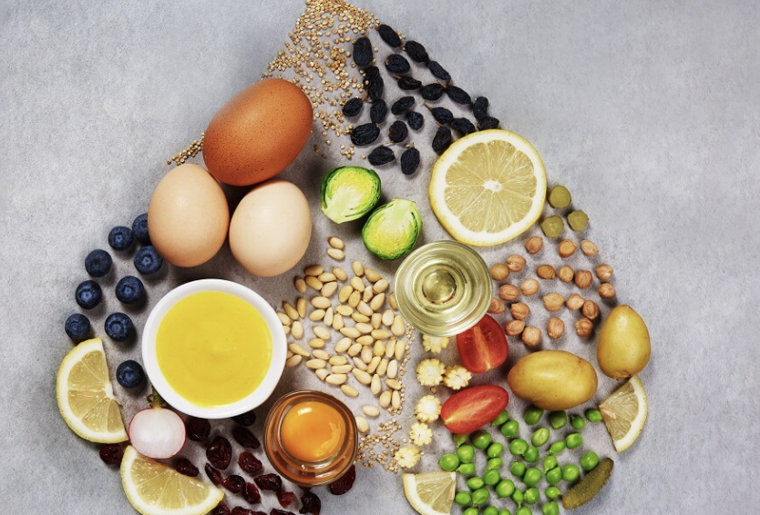

UN Global Goal

Goal 3: Good Health and Well-being
I chose Goal 3 because health is important for everyone. Good health can help people study, work, and live better lives.
This goal also connects to my interest in food science and nutrition. Healthy food choices can support people’s bodies and improve daily life.
Why This Goal Matters
Many people do not have enough knowledge about healthy habits. A simple website can help share basic information about food, exercise, sleep, and mental health.
What We Should Do
- Eat more balanced meals with vegetables, protein, and clean water.
- Exercise regularly and avoid sitting for too long.
- Get enough sleep to support both physical and mental health.
- Learn basic nutrition knowledge and share it with others.
How My Website Supports This Goal
My website supports this goal by sharing a clear message about health and nutrition. It also uses simple design so visitors can read the information easily.